How-To Geek
How To Customize Ubuntu’s Message of the Day
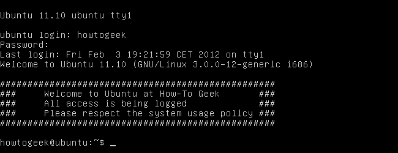
Ubuntu displays an informative message, known as the message of the day, when a user logs in at the terminal. The MOTD is fully customizable — you can add your own text and other dynamic data.
When a user logs in, the pam_motd process executes the scripts in the /etc/update-motd.d directory and dynamically creates the message of the day. You can customize the MOTD by modifying the scripts, removing them or writing your own scripts.
The Default Message of the Day
The message of the day is only shown when you log into Ubuntu in text mode, not graphical mode. You can access a virtual terminal with the Ctrl-Alt-F1 shortcut if you’re using a graphical desktop — use the Ctrl-Alt-F7 shortcut to get back to your graphical desktop, also known as your X server. Ctrl-Alt-F2 through Ctrl-Alt-F6 will take you to other virtual terminals.
Here’s Ubuntu’s standard MOTD. It shows the typical system version numbers you’ll be familiar with if you’re a long-time Linux user. It also shows dynamically generated information about available updates and static messages about Ubuntu’s license.
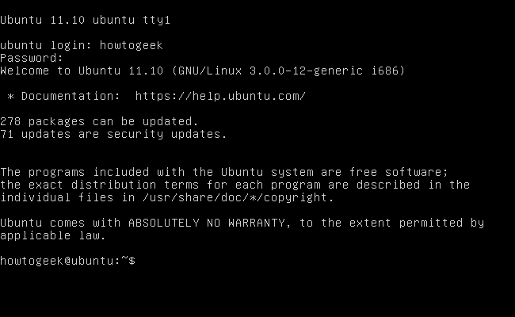
Adding a Custom Message
Let’s say you want to add a custom message users will see when they log into your Ubuntu system. Ubuntu’s MOTD is generated by scripts when you log in, so you can’t just add it to the /etc/motd file. The place to put your own static messages is /etc/motd.tail — the contents of this file are added to the end of the MOTD when it’s generated.
Let’s use the Nano text editor to open the /etc/motd.tail file with the following command: (Linux terminal wizards can use Vi or Emacs, but Nano is easier for newbies)
sudo nano /etc/motd.tail
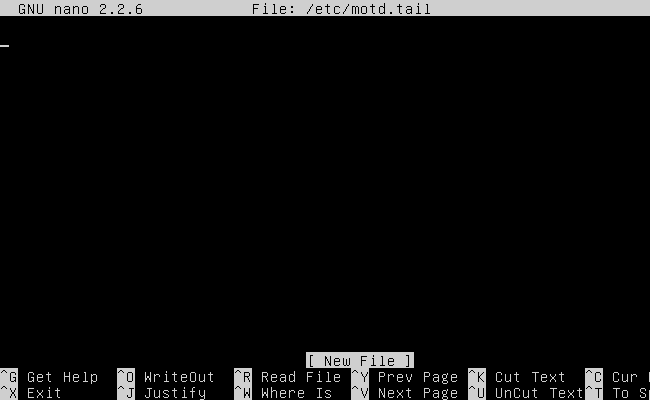
This file is completely empty by default. Just enter any message you like — feel free to go crazy with black-and-white ASCII art here. Once you’re done, save the file with Ctrl+O and Enter, then exit Nano with Ctrl+X.
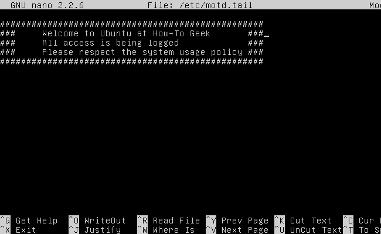
The next time any user logs in, they’ll see your custom message. If you want to check it out immediately, log out of the terminal with the exit command and log back in.
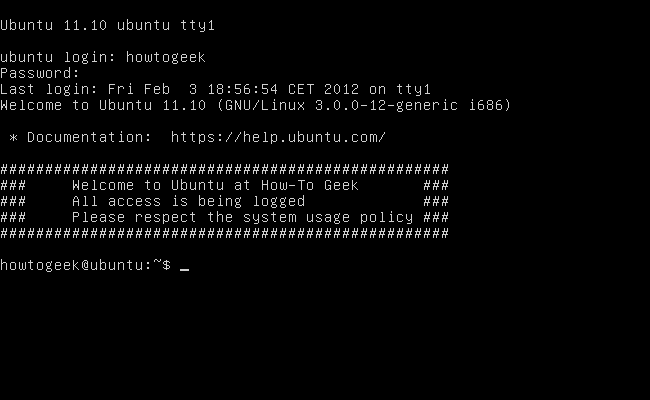
Removing Information
Now let’s say we want to remove some of the default information. It’s not just a matter of editting a single file — each section is automatically generated from a script located in the /etc/update-motd.d directory.
You can get a full list of the files in this directory by typing /etc/update-motd.d at the terminal and pressing Tab.
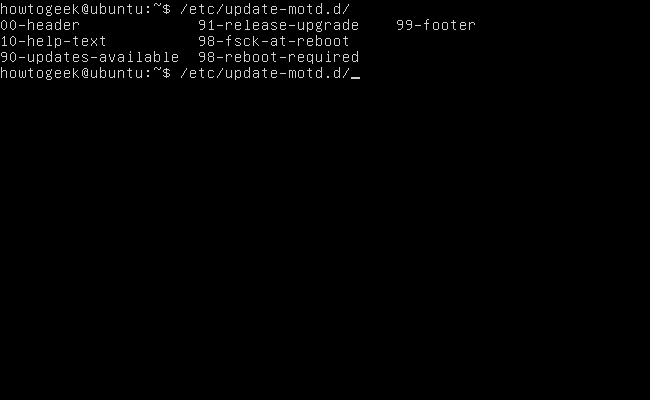
The scripts are run in numerical order, which is why they’re prefixed with numbers. You could rename the script files and change the numbers to rearrange the order of the different sections in the MOTD, if you liked.
To remove a script’s information from the MOTD, we just have to prevent it from running. We can do this by removing its execute permissions with the chmod -x command.
If we wanted to remove the documentation text in the MOTD, we’d run the following command:
sudo chmod -x /etc/update-motd.d/10-help-text
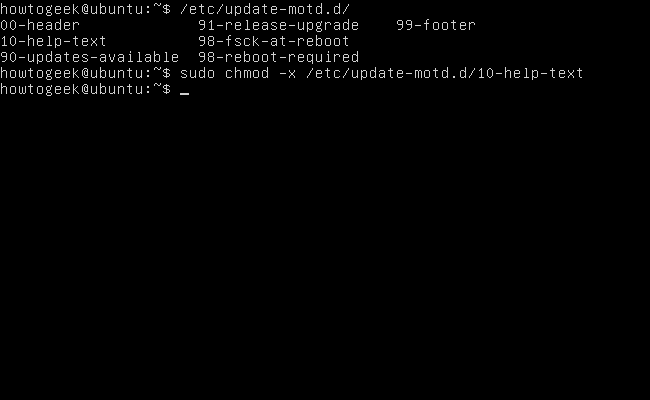
The next time a user logs in, they won’t see the documentation line.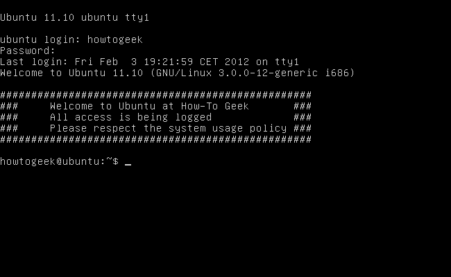
Adding Dynamic Information
We can write our own scripts to add any dynamic information we like to the MOTD. As an example, let’s try using the weather-util package to create a script that adds the current local weather to the MOTD.
It’s not installed by default, so let’s install it with the following command:
sudo apt-get install weather-util
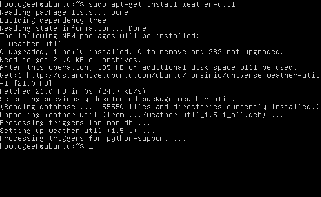
You’ll need your local International Civil Aviation Organization code, which you can get from this website. Here’s how to use weather-util with your code:
weather -i CODE
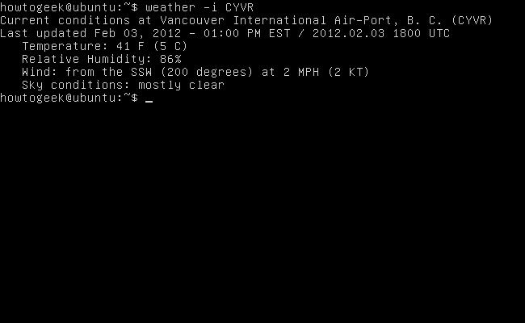
Now let’s use the following command to create a script in the appropriate location and open it with Nano:
sudo nano /etc/update-motd.d/98-weather
After Nano opens, enter the following code, replacing CODE with your local weather code:
#!/bin/sh
echo
weather -i CODE
echo
Press Ctrl-O and Enter to save, then press Ctrl-X to quit.
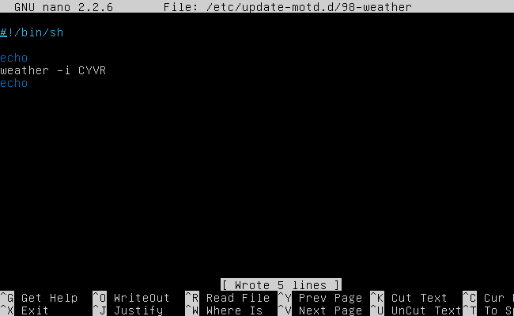
Make the script executable with chmod +x or it won’t run:
sudo chmod +x /etc/update-motd.d/98-weather
Now users will see a local weather forecast when they log in. There’s nothing special about weather-util — you can use any command that prints text to the terminal.
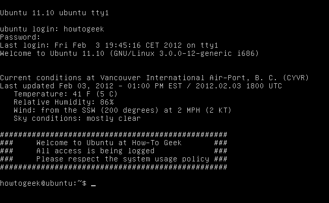
The MOTD isn’t only displayed when users log in locally. Any users that log in remotely with SSH or Telnet will also see your customized MOTD.
![]()
![]()
![]()
![]()
![]()
![]()
![]()
![]()
![]()

I have a fun greeting message in one of my user account for guest login. The following script was added to .bashrc file specific to guest user account, who use via SSH
IPADDR=`echo $SSH_CLIENT | awk ‘{ print $1 }’`
echo “Hi “$IPADDR”, welcome to My Machine” > /home/guest/$IPADDR
cat /home/guest/$IPADDR | while read x;do for((i=0;i<${#x};i++));do echo -n "${x:$i:1}";sleep .03;done;echo;done
rm -f /home/guest/$IPADDR
Thanks for the comment! That’s even more advanced stuff.
my small contribute:
echo -e ”
CPU `grep -m 1 “model name” /proc/cpuinfo | cut -d: -f2 | sed -e ‘s/^ *//’ | sed -e ‘s/$/ /’`with `grep “processor” /proc/cpuinfo | wc -l` Cores
Uptime `uptime | sed ‘s/.*up ([^,]*), .*/1/’`
Memory `free -t -m | grep “buffers/cache” | awk ‘{ print $3″ MB”;}’` / `free -t -m | grep “Mem” | awk ‘{ print $2″ MB”;}’`
Hostname `hostname`
Kernel `uname -r `
Address `/sbin/ifconfig eth0|grep ‘inet addr’|cut -d’:’ -f2|awk ‘{print $1}’`
Last Login `last | grep -v “still logged in” | head -1`
”
i have am ascii picture of an anime character along with this… i cover my username and IP adresses but they are there =p
http://img191.imageshack.us/img191/9728/prtscrcaptureu.jpg